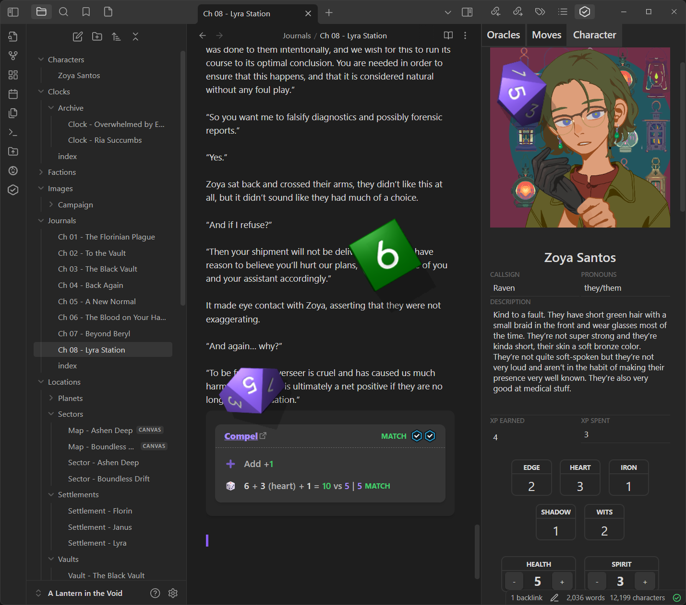

title: About Iron Vault
This is the documentation for Iron Vault, a plugin for Obsidian that turns the beloved note-taking/journaling tool into a full-fledged Virtual Tabletop (VTT) for the Ironsworn/Starforged family of games.
It has features ranging from a full character sheet, to commands for making moves, and even an entire featureset for rendering pretty mechanics blocks in your story journals describing the mechanics involved in your story, as they happen. You can even house multiple campaigns in the same vault!
The plugin is designed to be used piecemeal: you can use as much or as little as you want, and our only hope is that some part of it will be useful enough to make you enjoy your experience a little more.
It is not a "play for me"-style VTT, in the sense that while it has a lot of conveniences for rendering and interacting with mechanics, the actual resolution and logic of game mechanics is left up to you, and whatever flexibility you want to handle the game's rules with. The game, after all, is not a single monolithic set of laws, and everyone tends to take their own liberties with the rules in the interest of enjoying the game more.
Not sure where to start? There's a full Player's Guide or, more specifically, a Getting Started guide so you can jump right in with a new or existing campaign, using as much or as little of Iron Vault as you want!
You can also open this documentation at any time while in Obsidian by running the Open documentation in a tab or Open documentation in your browser commands.
You can start reading about the various Iron Vault features here:
[My Move](move:MyMoveName) will pop up a window with the description and roll buttons for "My Move".iron-vault-embed option for inlining embeds.The easiest way to install Iron Vault is directly through the Community Plugins registry in Obsidian itself. Simply search for "Iron Vault", click "install", then "enable", and you're good to go!
You can also install it via BRAT. You should be able to add iron-vault-plugin/iron-vault to BRAT, and it will install the latest beta release of this plugin.
You can also install it manually by downloading the latest files from Github Release. You'll want to put main.js, manifest.json, and styles.css in your-vault/.obsidian/plugins/iron-vault.
To build the code and copy it to your vault yourself, run pnpm build to generate the production files, which will be in the repo root. You can then copy these to the location above.
You should then be able to enable the plugin in your vault (after restarting/reloading Obsidian).
Iron Vault is a community project built by players, for players, and we welcome contributions! Please see CONTRIBUTING.md for details.